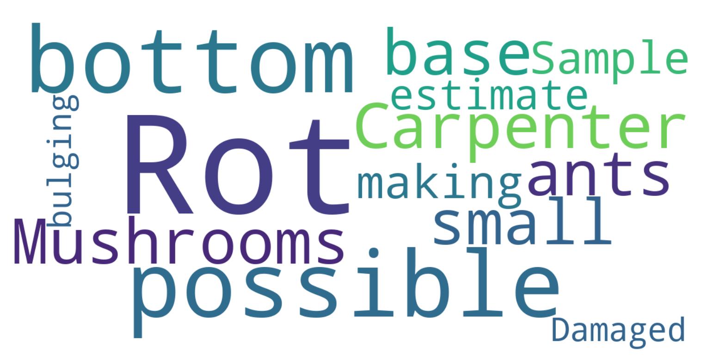

Inventory Insights
The tree inventory reveals distinct patterns in tree age and distribution across the study area. Large mature trees are primarily concentrated within Kells Park, indicating a long-established canopy in that location. In contrast, newly planted trees are most common in JH-P, reflecting recent restoration or expansion efforts. The following figures summarize key insights into tree density, size, and condition, highlighting both the spatial distribution of significant trees and the health trends across different sites.
Tree Inventory Map
Figure 3. Tree inventory map. Each point is an inventoried tree with its size proportional to its DBH. For the sake of visualization, large mature trees are scaled by 0.5 , while young and newly planted trees are scaled by 3.
Tree Density
Figure 4. Tree density map (Lighter areas indicate higher number of trees).
Tree Height, DBH, and Average Spread Distribution
Figure 5. Histogram of tree height, DBH, and average spread for each type of significant tree. Toggle to switch between each tree type.
Tree Type Distribution Across Sites
Figure 6. Type of signficiant trees overall and by site location.
Overall, the majority of the inventoried trees are large and mature (72.15%), as illustrated by Figure 6A. This indicates that the trail and parks are dominated by established mature trees rather than recent plantings.
As shown in Figure 6B, Kell Park contains the highest number of significant trees (30), followed closely by JH-W (29), while Lewis Park and Philips Park each have 21 significant trees. Together, park spaces account for nearly half of all inventoried trees (45.57%).
Figure 6B further shows that Kell Park has the greatest concentration of large mature trees (25), making it the site with the greatest number of high-value trees for ongoing monitoring and protection. Young trees were recorded only in Philips Park and JH-P, with JH-P also having the highest number of newly planted trees, highlighting these sites as priorities for establishment and long-term survivability.
Multi-Branch Trees Across Sites
Figure 7. Overall number of multi-branch trees by site.
| Site | Large mature tree | Young tree | Newly planted tree |
|---|---|---|---|
| RH-P | 2 | 0 | 0 |
Table 2. Count of multi-branch trees by site and significant tree type, excluding sites with no inventoried multi-branch trees.
Multi-branch trees provide greater canopy coverage, as multiple branches contribute to foliage and shade. Among the inventoried multi-branch trees, some may be codominant stems, where two or more large stems grow from the same point, forming a narrow “V”-shaped crotch. These stems can be structurally weaker as the tree matures and are most effectively managed through pruning while the trees are young (Mitchell 2017).
As shown in Figure 7, Rittenhouse Park includes two inventoried multi-branch trees. Both are classified as large mature trees (Table 2), indicating that structural monitoring should focus on mature-tree branch unions and any signs of included bark, decay, cracking, or weak attachment.
No young or newly planted multi-branch trees were identified in the current Rittenhouse Park inventory. As a result, the main management priority is not early structural pruning of new plantings, but periodic inspection of the two mature multi-branch trees to determine whether either has codominant stems or other structural concerns requiring arborist review.
Orthogonal Spread Measurements
Figure 8. Spread was measured in two perpendicular directions. This graph shows the first spread measurement against the second spread measurement for each site. Hover each point to see more information.
A large difference between orthogonal spread measurements indicates a highly irregular, asymmetrical canopy. This suggests the tree is not growing evenly and may be crowded by neighboring trees.
Tree Conditions
Figure 9. Tree condition breakdown by type of significant tree. Poor condition trees are all large and mature.
Figure 10. Condition of trees by site.
Across all inventoried trees, the majority (81.65%) were rated in good condition, with smaller proportions classified as fair (8.86%) or poor (9.49%).
Tree condition was not evenly distributed across site locations. Notably, JH-W had the highest number of poor-condition trees (10), which stands out relative to most other locations.
When toggling on only poor-condition trees in Figure 10, trail locations (JH-A, JH-L, JH-UD, and JH-W) collectively accounted for a substantially higher number of poor-condition trees (13) compared to park locations (LEW and PHIL), which together contained only two. This finding suggests that trees along trails may be more vulnerable to stressors than those in park settings.

Figure 11. Word cloud showing the most commonly noted characteristics of poor-condition trees. Visual rotting is the most commonly noted characteristics of poor-condition trees.
References
Mitchell, Ralph E. “Codominant Stems – Potential Future Tree Failures.” UF/IFAS Extension Charlotte County, 18 May 2017, blogs.ifas.ufl.edu/charlotteco/2017/05/18/codominant-stems-potential-future-tree-failures/.